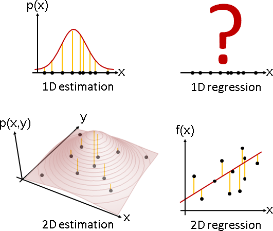

Estimation
Estimation（Parameter Estimation）
「估計」就是選定一種分布（例如常態分布、二項式分布、Gamma分布），找到適當的參數（例如平均數、變異數、形狀參數），盡量符合手邊的一堆樣本。
「估計」也是迴歸，函數改成機率密度函數，數據改成樣本。
Plot3D[PDF[MultinormalDistribution[{0, 0}, {{1, 0}, {0, 1}}], {x, y}], {x, -2, 2}, {y, -2, 2}, Boxed -> False, Axes -> False, Mesh -> Automatic, MeshFunctions -> {#3&}]
Estimator
以函數進行迴歸，所謂最符合就是誤差最小，例如Least Squares。以分布進行估計，所謂最符合就是機率最大，例如Maximum Likelihood、Maximum a Posterior。

一、已知樣本，欲求分布的參數。 二、首先採用直接法，以樣本直接推導參數。 然而十分困難，無法得到數學公式。 三、於是採用試誤法，窮舉各種參數，一一驗證。 甲、針對一種參數： 口、各個樣本一一代入分布，分別求得出現機率。求得總乘積。 （此為ML。若為MAP，則額外乘上該分布參數的出現機率。） 口、記錄總乘積最大者。 乙、取log，連乘化作連加。 避免機率越乘越小、低於浮點數精確度而變成零。 （取log最大值位置不變。） 丙、窮舉法太慢，需改用其他最佳化演算法。
範例：店面一日人潮統計
我準備好筆記本、手錶、提神飲料，從半夜12點開始，坐在麵店門口24小時，痴痴地等著客人上門，登記每位客人的到訪時間，做為樣本。我認為到訪時間呈Gamma分布，我想估計平均數和形狀參數是多少。
【待補圖片】
平均數可能是0點、1點、2點、……、24點，看起來每一種都有可能。這個時候就應該使用Maximum Likelihood。
【待補圖片】
不過根據我對真實世界的了解，我知道大家通常晚上六點下班，然後大家相約吃飯小酌一下。所以平均數是19點、20點、21點、22點的機率非常高！我也知道三更半夜，不太有人吃麵，所以平均數是2點、3點、4點的機率非常低！我認為平均數呈常態分布！這個時候就應該使用Maximum a Posterior。
【待補圖片】
延伸閱讀：Estimation
以統計學慣用的代數符號，重新說明「估計」。
一、已知一堆樣本X = {x1, ..., xN}。
已知特定分布的機率密度函數f(x, μ, σ², λ)。
不知特定分布的參數Θ = {μ, σ², λ, ...}，
像是機率密度函數的平均數μ、變異數σ²、形狀參數λ、...
二、統計學家習慣把已知與未知寫成條件機率。
p( μ,σ,λ,... | x1,...,xN,f ) 或者 p( Θ | X,f )
三、所謂最符合，就是機率越大越好。
max p( μ,σ²,λ,... | x1,...,xN,f ) 或者 max p( Θ | X,f )
四、找到此時平均數θ、變異數σ、形狀參數λ是多少。
argmax p( μ,σ²,λ,... | x1,...,xN,f ) 或者 argmax p( Θ | X,f )
μ,σ²,λ,... Θ
五、雖然我們知道p函數一定存在，但是我們不知道p函數長什麼樣，無從計算。
Maximum Likelihood：找到其中一種分布參數，在此參數下，各個樣本的機率，乘積最大。
一、ML是找到其中一種分布參數，在此參數下，這堆樣本的機率最大。 argmax f(X|Θ) Θ 二、推定樣本之間互相獨立、不互相影響，就可以套用乘法定理。 argmax f(X|Θ) Θ = argmax [ f(x1|Θ) * ... * f(xN|Θ) ] Θ 三、取 log 將連乘化作連加。取 log 後最大值位置仍相同。 argmax log f(X|Θ) Θ = argmax log [ f(x1|Θ) * ... * f(xN|Θ) ] Θ = argmax [ log f(x1|Θ) + ... + log f(xN|Θ) ] Θ 四、求得函數log f(X, Θ)的最大值。
Maximum a Posterior：找到其中一種分布參數暨樣本，出現機率的乘積最大。
一、MAP是計算各個樣本暨各個分布參數的出現機率，令總乘積最大。
argmax p(X,Θ)
Θ
二、套用貝式定理
argmax p(X,Θ) = argmax { p(X|Θ) * p(Θ) }
Θ Θ
三、推定樣本之間互相獨立、不互相影響，就可以套用乘法定理。
argmax p(X,Θ) = argmax { p(X|Θ) * p(Θ) }
Θ Θ
= argmax { f(x1|Θ) * ... * f(xN|Θ) * p(Θ) }
Θ
四、後面都跟Maximum Likelihood的步驟完全一樣，多了一項 p(Θ) 而已。
argmax log f(X,Θ) = argmax log { p(X|Θ) * p(Θ) }
Θ Θ
= argmax log { f(x1|Θ) * ... * f(xN|Θ) * p(Θ) }
Θ
= argmax { log f(x1|Θ) + ... + log f(xN|Θ) + log p(Θ) }
Θ
MAP是ML的通例。ML假設各種分布參數的出現機率均等，呈uniform distribution。MAP更加仔細考慮分布參數的出現機率，不見得要均等。
Model Selection / Model Validation
https://en.wikipedia.org/wiki/Model_selection
http://en.wikipedia.org/wiki/Regression_model_validation
我要怎麼知道一開始選擇的分布是對的？我要如何判斷到訪時間比較像Gamma分布，或者比較像Poisson分布呢？
這屬於統計學的範疇，就此打住。我沒有研究。似乎大家都是自由心證。
AIC = -2*ln(likelihood) + 2*k, BIC = -2*ln(likelihood) + ln(N)*k k = model degrees of freedom N = number of observations
Bias / Variance
假設一開始選定的分布是對的！如果不對，此段落沒啥好談。
Bias是指「窮舉各種樣本組成，分別估計參數，所有結果的平均數」與「真實參數」的差值。
Bias是衡量估計參數對不對的指標。不好的Estimator，可以證明估計參數鐵定失準。
Variance就是變異數，此處我們是算「窮舉各種樣本組成，分別估計參數，所有結果的變異數」。
Variance此處用來衡量估計參數的浮動範圍。我們希望對於奇葩的樣本組成，估計結果仍然差不多，浮動範圍越小越好。
Bias和Variace是兩件事情。即便正確，還是可以有浮動範圍。
仔細推導Bias和Variance的關係式。平方誤差的平均數，由Bias和Variance組成。完美的估計，令平方誤差達到極小值、為定值，而此時Bias和Variance此消彼長，魚與熊掌不可兼得。
mean square error = (bias)² + variance
儘管我們不可能知道真實參數是多少，不過卻可以得到魚與熊掌不可兼得的結論：無論採用哪種Estimator，Bias和Variance無法同時令人滿意。
演算法（樣本平均數、樣本變異數）
經典的分布，估計平均數、變異數，採用Maximum Likelihood，一次微分等於零、二次微分大於零，推導公式解，公式解多半是所有樣本的「母體平均數」、「母體變異數」。母體二字常省略。
μ = (x₁ + ... + xN) / N σ² = [ (x₁ - μ)² + ... + (xN - μ)² ] / N
母體平均數沒有問題，其Bias等於零，證明省略。
母體變異數則有問題，其Bias不是零，Maximum Likelihood不可靠。分母設定成N-1，其Bias才是零。證明省略。
這稱做「樣本平均數」、「樣本變異數」。
x = (x₁ + ... + xN) / N s² = [ (x₁ - x)² + ... + (xN - x)² ] / (N-1)
另外補充一下。根據大數定律，當樣本無限多、樣本互相獨立（樣本隨機取得），則母體平均數趨近分布平均數。大可不必透過Maximum Likelihood。
但是我查不到母體變異數趨近分布變異數的任何資料。
演算法（Expectation-Maximization Algorithm）
經典的分布，諸如二項式分布、常態分布，估計時採用ML或MAP，可以推導確切的函數式子，甚至微分式子。運氣好，推導公式解；運氣差，套用最佳化演算法。
專為ML和MAP設計的最佳化演算法，找到機率最大值。
http://www.seanborman.com/publications/EM_algorithm.pdf
http://www.cs.cmu.edu/~awm/10701/assignments/EM.pdf
一、凹（凸）函數定義可以寫成內插。 內插之後函數值必然上升（下降）。 註：凹函數的外觀是隨時向上凸，定義不太直覺。 二、機率函數的期望值就是一種內插！ 如果機率函數是凹（凸）函數， 想求極值，那就好辦，不斷求期望值即可！ 三、改變ML函數、移動log位置，變成一個凹函數。 證明此凹函數小於等於原式，是ML函數的下界。 四、凹函數求期望值、往上爬，函數值嚴格上升。 ML函數的函數值必然同時跟著上升。 五、根據現在位置， 不斷求一個新的凹函數，不斷求期望值、往上爬。 最後就會得到區域極值，類似Hill Climbing演算法。